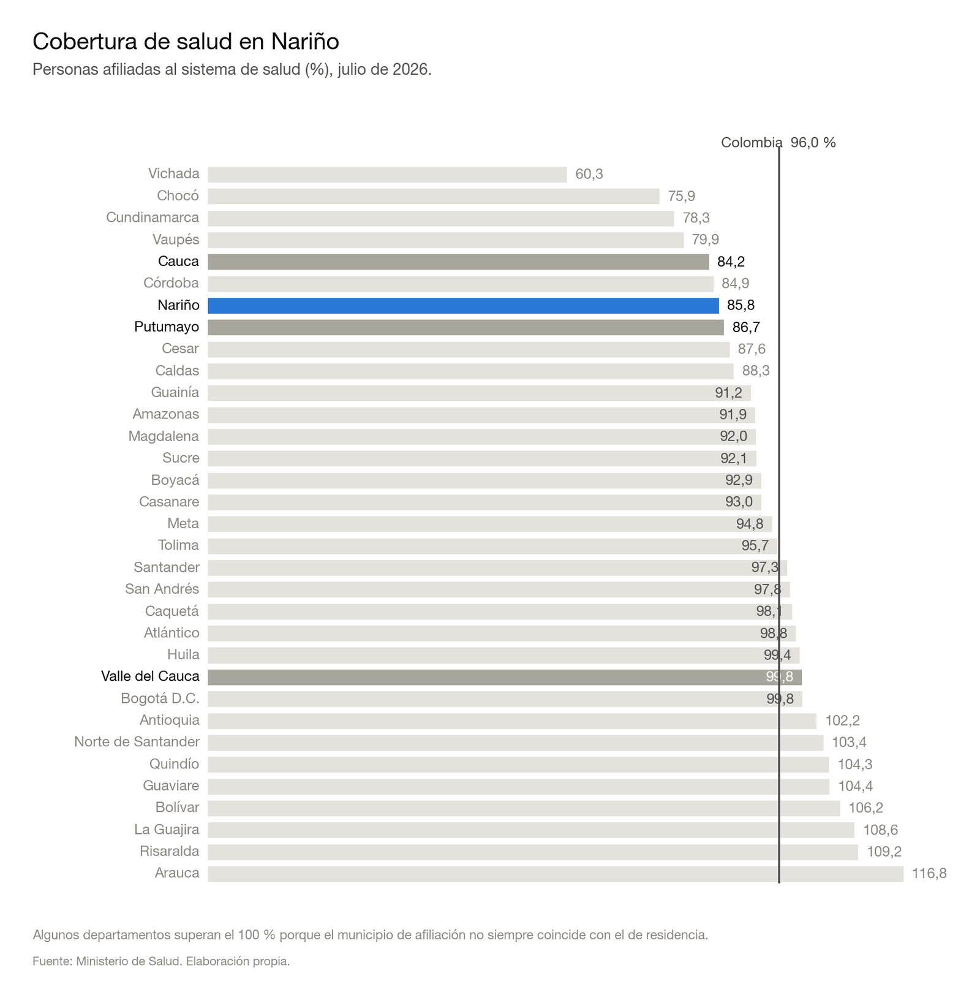
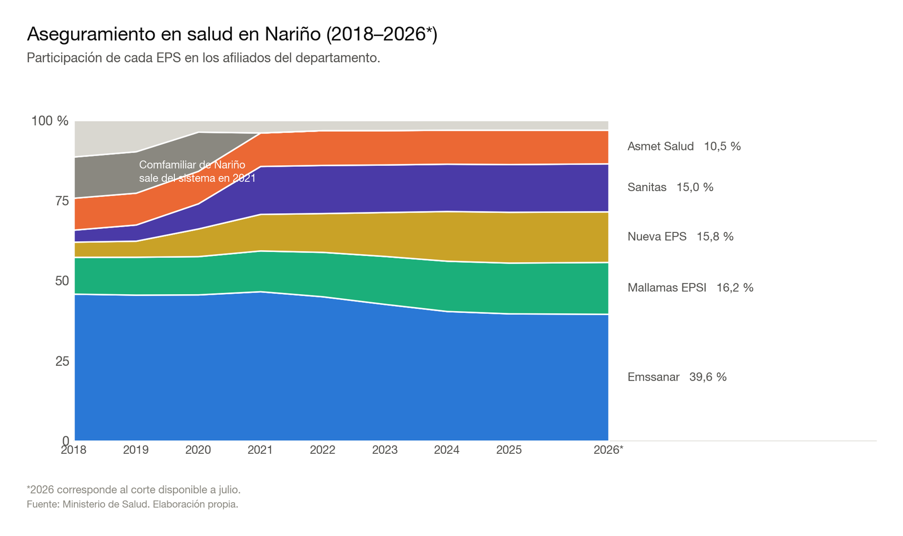
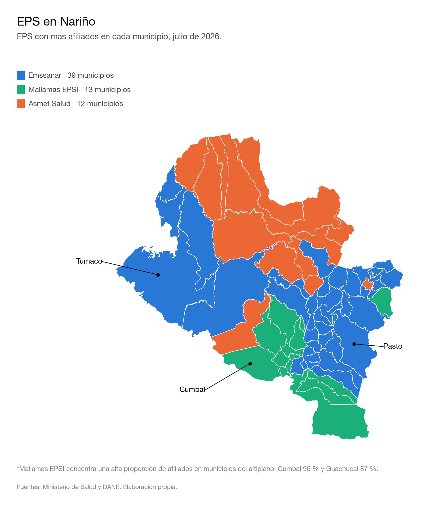
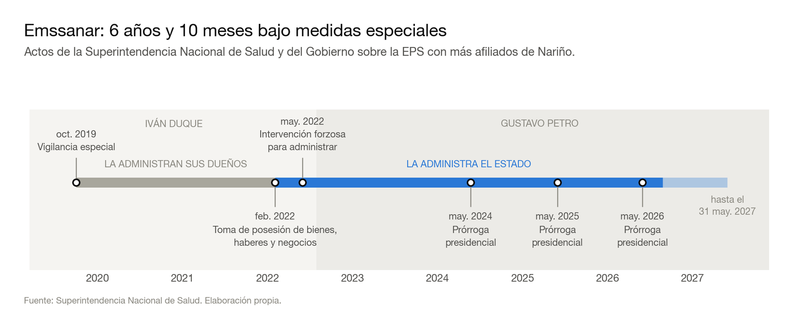
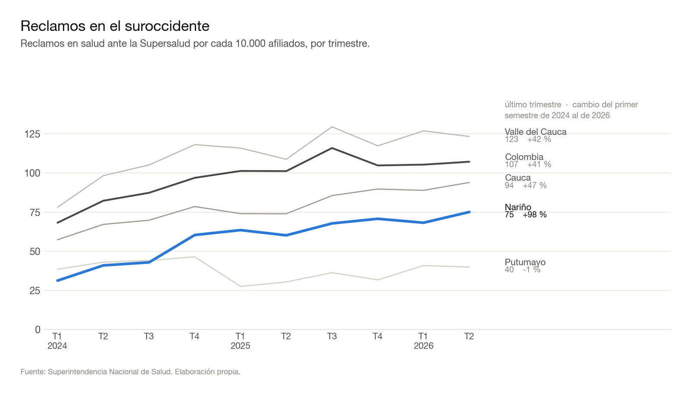
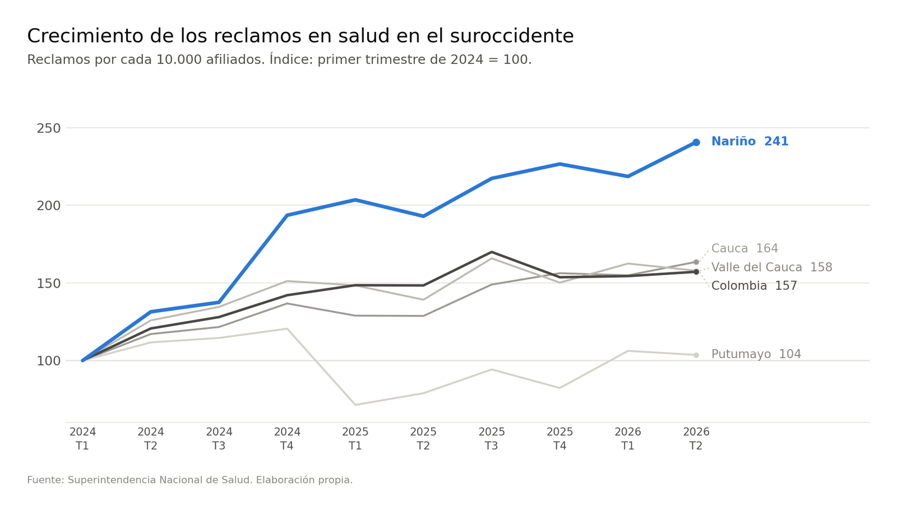
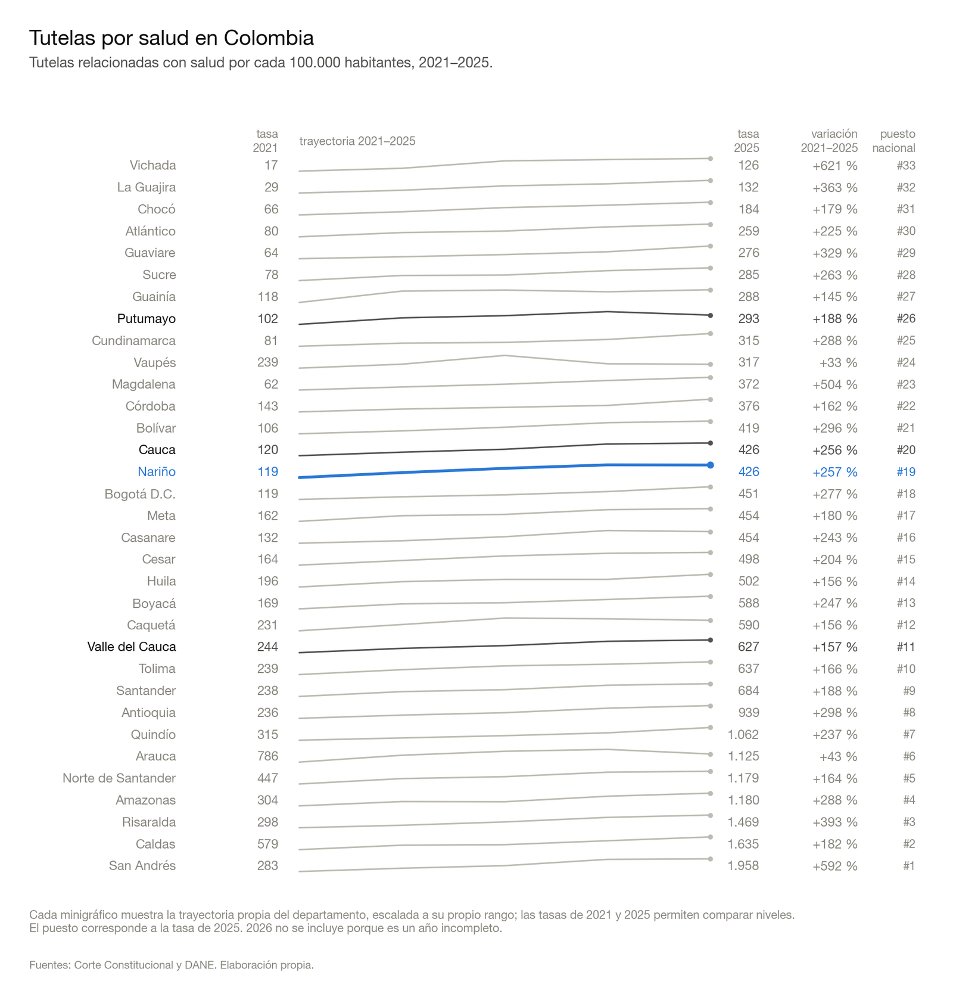
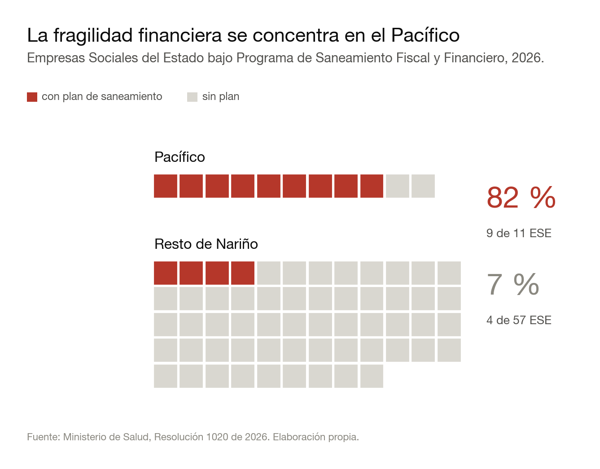

Salud en Nariño: cobertura, reclamos y una red pública bajo presión
Nariño registra una cobertura de afiliación inferior al promedio nacional, reclamos que crecen a un ritmo mayor que en el resto del suroccidente, la principal EPS del departamento bajo medidas especiales desde 2019 y una sucesión reciente de suspensiones o restricciones de servicios por incumplimientos de pago.
Por Jorge Luis Congacha
Nariño ha contado durante años con una red hospitalaria reconocida dentro y fuera del departamento. El Hospital Universitario Departamental llegó a ocupar los primeros lugares entre los hospitales públicos de América Latina en rankings regionales y, desde 2010, mantiene su Acreditación en Salud. De igual manera, otras instituciones del departamento han alcanzado o renovado certificaciones de calidad en los últimos años. Sin embargo, esa capacidad institucional convive hoy con señales que merecen atención: una cobertura de afiliación inferior al promedio nacional, reclamos que crecen a un ritmo mayor que en el resto del suroccidente, la principal EPS del departamento bajo medidas especiales desde 2019 y una sucesión reciente de suspensiones o restricciones de servicios por incumplimientos de pago.
En este contexto, la senadora nariñense Liliana Benavides promovió en la Comisión Cuarta del Senado un debate de control político sobre la situación financiera de la salud en Colombia, especialmente en Nariño. Aunque los datos públicos disponibles no permiten responder con precisión una de las preguntas centrales, cuánto deben actualmente las EPS a los hospitales y clínicas del departamento, sí permiten observar otros indicadores que ayudan a entender la situación del sistema de salud y las dificultades que enfrentan tanto las instituciones como sus usuarios.
El debate llega, además, en un momento particular. Nariño conserva instituciones reconocidas por sus estándares de calidad, pero al mismo tiempo enfrenta dificultades financieras que durante 2026 se han hecho visibles también en la prestación de los servicios. Durante 2026 varios hospitales, clínicas y prestadores han anunciado suspensiones o restricciones en la atención a usuarios de Emssanar por incumplimientos en acuerdos de pago. Entre abril y agosto se pudieron documentar varios episodios correspondientes a ocho prestadores, cinco de ellos concentrados en apenas catorce días entre finales de julio y comienzos de agosto.
La situación resulta especialmente relevante porque Emssanar no es una aseguradora marginal dentro del departamento. Administra la afiliación de aproximadamente cuatro de cada diez usuarios del sistema de salud de Nariño. Por ello, las dificultades financieras de la EPS y sus relaciones con la red prestadora pueden terminar afectando a una proporción importante de la población.
Existe así una situación que resulta preocupante. En el caso del Hospital Civil de Ipiales, cifras entregadas por la directora del Instituto Departamental de Salud de Nariño a El Tiempo indican que durante 2025 facturó alrededor de $169.000 millones, pero solo logró recaudar cerca de $97.000 millones. Estas cifras muestran un riesgo: si las instituciones prestan y facturan servicios, pero no reciben oportunamente los recursos correspondientes, las dificultades financieras pueden terminar afectando, en el corto y mediano plazo, su capacidad para sostener la prestación y la calidad de la atención.
Cobertura de afiliación inferior al promedio nacional
Respecto a la cobertura de afiliación al sistema de salud, a julio de 2026 Nariño registraba 1.477.969 afiliados, equivalentes al 85,8 % de la población del departamento. Para el conjunto del país, el indicador alcanzaba el 96,0 %, una diferencia superior a diez puntos porcentuales.
La comparación con los departamentos vecinos muestra, sin embargo, que Nariño no constituye un caso aislado dentro del suroccidente. Valle del Cauca registraba una cobertura del 99,8 %, Putumayo del 86,7 % y Cauca del 84,2 %. Nariño se encuentra, por tanto, por debajo del promedio nacional, aunque en niveles similares a los de otros departamentos de la región. Los datos muestran que todavía existe un margen importante para ampliar y mejorar el registro de afiliación, tanto en Nariño como en buena parte del suroccidente.

Nota metodológica: El indicador compara los afiliados registrados con la proyección de población del DANE. Fuerzas Militares y Policía Nacional no se incluyen en el numerador, por lo que el complemento del 85,8 % no debe interpretarse directamente como población sin acceso a servicios de salud. Algunos departamentos superan el 100 % porque el municipio de afiliación no necesariamente coincide con el de residencia.
Cinco empresas concentran el aseguramiento en Nariño
Por otra parte, el aseguramiento en salud de Nariño se ha transformado profundamente durante los últimos ocho años. A julio de 2026, cinco entidades concentraban prácticamente la totalidad de los afiliados del departamento: Emssanar, con el 39,6 %; Mallamas EPSI, con el 16,2 %; Nueva EPS, con el 15,8 %; Sanitas, con el 15,0 %; y Asmet Salud, con el 10,5 %.
Emssanar continúa siendo, con amplia diferencia, la entidad con mayor número de afiliados: 584.774 personas, cerca de cuatro de cada diez afiliados de Nariño. Sin embargo, su participación se ha reducido. En 2018 concentraba el 45,9 % del aseguramiento departamental y desde su máximo de diciembre de 2021 ha perdido más de 102.000 afiliados.
Al mismo tiempo crecieron otros actores. Sanitas pasó de representar el 3,7 % de los afiliados al 15,0 %; Nueva EPS aumentó del 4,7 % al 15,8 %, mientras Mallamas pasó del 11,5 % al 16,2 %. A ello se suma la salida de Comfamiliar de Nariño, que todavía en 2020 concentraba el 12,2 % del aseguramiento y desapareció del sistema al año siguiente.

Esta distribución también tiene una expresión territorial. De los 64 municipios del departamento, Emssanar es la EPS con mayor número de afiliados en 39, Mallamas EPSI en 13 y Asmet Salud en 12.
Mallamas, por su carácter de EPS indígena, presenta una concentración especialmente alta en municipios del altiplano. En Cumbal reúne aproximadamente el 95,6 % de los afiliados y en Guachucal el 86,6 %. En total, supera el 40 % de participación en catorce municipios. Emssanar, por su parte, domina buena parte del centro del departamento y numerosos municipios del Pacífico, mientras Asmet Salud tiene una presencia importante principalmente hacia el norte.

Emssanar: casi siete años bajo medidas especiales
El peso que tiene Emssanar dentro del departamento hace particularmente relevante lo ocurrido con la entidad durante los últimos años. Su historia bajo medidas especiales comenzó el 2 de octubre de 2019, cuando la Superintendencia Nacional de Salud le impuso vigilancia especial. En ese momento la EPS continuaba siendo administrada por sus propietarios, aunque bajo seguimiento de la autoridad sanitaria.
La situación cambió en febrero de 2022. La Superintendencia ordenó la toma de posesión de sus bienes, haberes y negocios y designó un agente especial. Posteriormente, el 31 de mayo de 2022, todavía durante el gobierno de Iván Duque, la medida pasó a una intervención forzosa administrativa para administrar, con lo cual el manejo de la EPS quedó en manos del Estado a través de un interventor.
Desde entonces la intervención se ha prorrogado. En mayo de 2024, 2025 y 2026 se extendió nuevamente la medida y su vigencia actual llega hasta el 31 de mayo de 2027. En total, Emssanar acumula cerca de siete años bajo diferentes medidas especiales y más de cuatro años bajo intervención directa.

Después de un periodo tan prolongado, resulta pertinente preguntarse cuáles han sido los resultados concretos y medibles de las medidas adoptadas y cuál es el plan para que la entidad pueda recuperar una operación estable, debido a que durante este 2026 las tensiones entre Emssanar y distintos prestadores de Nariño se han venido haciendo particularmente visibles.
En este sentido, entre abril y agosto se han podido documentar varios episodios de suspensión o restricción de servicios correspondientes a ocho prestadores, entre ellos el Hospital Universitario Departamental de Nariño, la Fundación Hospital San Pedro, el Hospital San Rafael, el Hospital Civil de Ipiales, el Hospital San Andrés de Tumaco, Medinuclear, INOOS y GenHospi, entre otros. Las restricciones involucraron desde consultas y servicios hospitalarios hasta entrega de medicamentos, salud mental y atención oncológica.
El caso de la Fundación Hospital San Pedro muestra además que el problema no termina necesariamente cuando se alcanza un acuerdo. La institución suspendió servicios en mayo, posteriormente los restableció después de llegar a un compromiso de pago con Emssanar y, a finales de julio, volvió a suspenderlos argumentando el incumplimiento de ese mismo acuerdo. La secuencia: suspensión, negociación, restablecimiento y nueva suspensión, evidencia la dificultad para estabilizar las relaciones financieras entre la aseguradora y parte de su red prestadora.
Otro de los episodios de mayor alcance territorial ocurrió el 3 de junio en Tumaco, cuando el Hospital San Andrés suspendió la atención a afiliados de Emssanar procedentes de seis municipios del Pacífico, con excepción de las urgencias vitales. La medida podía afectar a 128.079 afiliados. El caso resulta especialmente relevante porque cinco de los seis municipios involucrados tienen su Empresa Social del Estado bajo Programa de Saneamiento Fiscal y Financiero. La tensión contractual con la principal aseguradora alcanzó, por tanto, precisamente a una zona cuya red pública ya presenta las mayores señales de fragilidad financiera del departamento.
Sin embargo, las dificultades no se limitan a Nariño. Emssanar opera también en Cauca, Putumayo y Valle del Cauca. Esta precisión es importante al analizar sus cifras financieras: aunque Emssanar representa el 39,6 % del aseguramiento de Nariño, los afiliados nariñenses constituyen solamente el 35,4 % del total de usuarios de la EPS. Valle del Cauca, por sí solo, concentra el 48,8 %. Por esta razón, las cifras financieras generales de Emssanar no pueden atribuirse exclusivamente a Nariño.
Con la información disponible, se evidencia que al 31 de diciembre de 2024 Emssanar debía $688.945 millones a las 225 clínicas y hospitales que reportaban información a la Asociación Colombiana de Hospitales y Clínicas, y el 61,2 % de esa cartera tenía más de 60 días. Para 2025 no se dispone de una cifra pública comparable que permita establecer cómo evolucionó esta deuda y, por tanto, determinar si aumentó o disminuyó. Esta ausencia de información deja abierta una pregunta fundamental: ¿a cuánto asciende actualmente la deuda de Emssanar y cuánto debe específicamente a las instituciones que durante 2026 han suspendido o restringido sus servicios, especialmente en Nariño?
Entre enero y junio de 2026, el 88,58 % de los recursos de la UPC reconocidos a Emssanar fue girado directamente por la ADRES a los prestadores. La información disponible no permite conocer qué obligaciones fueron cubiertas con esos recursos, a qué periodos correspondían ni cuánto de la cartera acumulada pudo ser atendida mediante este mecanismo. El dato sí abre preguntas relevantes sobre el funcionamiento actual de la EPS: ¿qué ha llevado a que cerca de nueve de cada diez pesos reconocidos por UPC sean girados directamente a los prestadores?, ¿qué papel conserva Emssanar en la administración de estos recursos?, ¿a qué instituciones se han dirigido los giros y qué proporción de sus obligaciones han permitido cubrir? Estas preguntas adquieren mayor importancia al tratarse de una entidad que permanece bajo intervención estatal desde 2022 y que, al mismo tiempo, continúa enfrentando conflictos financieros con parte de su red prestadora.
Los reclamos en Nariño crecen más rápido
De igual manera, las dificultades observadas entre aseguradores y prestadores plantean otra pregunta: ¿qué muestran los reclamos presentados por los usuarios?
En términos de nivel, Nariño todavía registra menos reclamos que el promedio nacional y que algunos departamentos vecinos. En el segundo trimestre de 2026 presentó alrededor de 75 reclamos por cada 10.000 afiliados, frente a 107 en Colombia, 123 en Valle del Cauca y 94 en Cauca. Putumayo, con cerca de 40, se encuentra por debajo.

Pero observar únicamente el nivel oculta uno de los principales hallazgos de los datos. Si se toma el primer trimestre de 2024 como base 100, la tasa de reclamos de Nariño alcanza un índice de 241 en el segundo trimestre de 2026. Cauca llega a 164, Valle del Cauca a 158, Colombia a 157 y Putumayo a 104.
En otras palabras, Nariño todavía reclama menos que el promedio nacional, pero los reclamos están creciendo mucho más rápido.

La diferencia es considerable. Entre el primer semestre de 2024 y el primero de 2026, la tasa de reclamos aumentó aproximadamente 98 % en Nariño, frente al 41 % en Colombia, 47 % en Cauca y 42 % en Valle del Cauca. Putumayo prácticamente no presentó crecimiento en el mismo periodo.
Hay además un elemento que hace especialmente relevante seguir este indicador. Las cifras anteriores llegan únicamente hasta el segundo trimestre de 2026 y, por tanto, todavía no incorporan las suspensiones y restricciones de servicios que se concentraron durante julio y agosto del presente año, cuando varios prestadores limitaron o interrumpieron la atención a usuarios de Emssanar. El crecimiento que muestra la gráfica, entonces, antecede a esa nueva etapa de tensiones: al cierre de 2025, el índice de Nariño ya se encontraba alrededor de 227, más del doble de su nivel inicial. Habrá que esperar los siguientes cortes para saber si esta sucesión de dificultades se traduce en un aumento adicional de los reclamos. Si ocurre, profundizaría una tendencia que ya diferenciaba a Nariño del resto del suroccidente antes de los episodios recientes.
Dentro del departamento también existen diferencias importantes. Pasto, por ejemplo, registra una tasa de reclamos aproximadamente tres veces y media superior a la del resto de Nariño. Esta diferencia debe leerse con cautela teniendo en cuenta que la capital concentra buena parte de la capacidad institucional y de los servicios de mayor complejidad del departamento, y recibe pacientes remitidos desde otros municipios para consultas especializadas, procedimientos y tratamientos que no están disponibles en sus lugares de origen. A ello se suma una mayor facilidad para acceder a los canales mediante los cuales se formalizan las reclamaciones, como internet, líneas telefónicas y oficinas institucionales. Por estas razones, la mayor tasa registrada en Pasto no puede interpretarse por sí sola como evidencia de una peor atención en la capital: puede reflejar también la concentración territorial de la demanda, de los servicios especializados y de los propios mecanismos de reclamación.
La lectura territorial tiene, además, una limitación importante: las estadísticas de reclamos de la Superintendencia excluyen a las EPS indígenas. Esto significa que una parte de las inconformidades que puedan presentarse entre los afiliados de Mallamas, que concentra una proporción muy alta del aseguramiento en varios municipios del altiplano nariñense, no está representada en esta serie.
Las tutelas aumentan en Nariño
El crecimiento de los reclamos plantea una segunda pregunta: ¿esa mayor inconformidad de los usuarios también se observa cuando deben acudir a la justicia para reclamar su derecho a la salud? Los datos de tutelas muestran que la presión también ha aumentado por esta vía, aunque en este caso Nariño no presenta un comportamiento excepcional frente al resto del país.
Entre 2021 y 2025, la tasa de tutelas relacionadas con salud en Nariño pasó de 119 a 426 por cada 100.000 habitantes, un incremento cercano al 257 %. Es decir, en apenas cuatro años la tasa se multiplicó por más de tres. Sin embargo, al comparar esta trayectoria con la de los demás departamentos se observa que el aumento forma parte de un fenómeno mucho más generalizado.

Cauca ofrece el contraste más cercano. En 2021 registraba 120 tutelas por cada 100.000 habitantes, prácticamente el mismo nivel de Nariño, y en 2025 ambos departamentos terminaron alrededor de 426. En ese último año Nariño ocupó el puesto 19 entre los 33 territorios incluidos en la comparación, mientras Cauca se ubicó inmediatamente después. Otros departamentos registraron tasas considerablemente superiores: San Andrés alcanzó 1.958 tutelas por cada 100.000 habitantes, Caldas 1.635 y Risaralda 1.469.
La comparación nacional refuerza esta lectura. Durante los cinco años analizados, Nariño permaneció por debajo de la tasa del país. Para 2025, mientras el departamento registraba 426 tutelas por cada 100.000 habitantes, Colombia alcanzaba aproximadamente 589. Incluso en el último año las trayectorias fueron distintas: en Nariño la tasa disminuyó ligeramente frente a 2024, mientras en el conjunto del país continuó aumentando.
En conjunto, reclamos y tutelas muestran dos dinámicas diferentes. Ambos indicadores han aumentado en Nariño, pero mientras los reclamos presentan un crecimiento particularmente acelerado frente al resto del suroccidente y al promedio nacional, el incremento de las tutelas forma parte de una tendencia más generalizada en el país. Por ello, el aumento de la judicialización en salud es relevante para Nariño, aunque no constituye por sí solo una particularidad del departamento.
La fragilidad financiera se concentra en el Pacífico
Las dificultades financieras de la red pública tampoco se distribuyen de la misma manera dentro de Nariño. De acuerdo con la Resolución 1020 de 2026 del Ministerio de Salud, 13 de las 68 Empresas Sociales del Estado (ESE) del departamento se encuentran bajo Programa de Saneamiento Fiscal y Financiero. Se trata de un instrumento mediante el cual las instituciones deben adoptar medidas para recuperar su sostenibilidad financiera, por lo que estar dentro del programa no significa necesariamente que un hospital esté quebrado ni que preste servicios de menor calidad.
Lo que resulta especialmente relevante es dónde se concentran esas instituciones. De las 11 ESE ubicadas en el Pacífico nariñense, nueve se encuentran bajo un programa de saneamiento, es decir, cerca del 82 %. En el resto del departamento la situación es considerablemente diferente: solamente cuatro de 57 ESE están bajo esta medida, alrededor del 7 %.

La diferencia permite identificar una brecha territorial considerable. Mientras en buena parte de Nariño las ESE bajo saneamiento representan una proporción relativamente reducida de la red pública, en la costa Pacífica constituyen la gran mayoría. Barbacoas, El Charco, Francisco Pizarro, La Tola, Magüí Payán, Olaya Herrera, Roberto Payán, Santa Bárbara de Iscuandé y una de las dos ESE de Tumaco aparecen dentro del programa. Mosquera es el único municipio de esta subregión cuya ESE no se encuentra bajo esta medida.
Esta situación adquiere todavía mayor relevancia al relacionarla con las dificultades recientes de Emssanar. El 3 de junio, el Hospital San Andrés de Tumaco suspendió la atención a afiliados de la EPS provenientes de seis municipios del Pacífico, salvo las urgencias vitales. Cinco de esos seis municipios tienen precisamente sus ESE bajo Programa de Saneamiento Fiscal y Financiero. De esta manera, las restricciones afectaron a una población ubicada en una zona donde la red pública ya presenta las mayores señales de fragilidad financiera del departamento.
El contraste con otras zonas de Nariño también es importante. Las instituciones acreditadas y con mayor capacidad hospitalaria del departamento se ubican principalmente en Pasto e Ipiales, mientras ninguna de las instituciones acreditadas se encuentra en el Pacífico. Esto evidencia una marcada diferencia territorial: las mayores capacidades institucionales y los reconocimientos de calidad se concentran en el área andina, mientras las mayores señales de fragilidad financiera de la red pública se encuentran en el Pacífico.
Lo que queda por responder
Después de todo lo anterior, queda una pregunta fundamental: ¿cuánto deben actualmente las EPS a los hospitales y clínicas de Nariño? La información pública disponible no permite establecer una cifra precisa y comparable. Distintas declaraciones han mencionado valores que superan los $2 billones, pero corresponden a publicaciones y momentos diferentes y no se cuenta con una base pública que permita conocer con exactitud qué prestadores, obligaciones y periodos incluye cada estimación. Por esta razón, no sería adecuado presentar una única cifra como la deuda actual del sistema de salud del departamento.
Lo que sí se ha informado permite dimensionar parte del problema. Según cifras del Instituto Departamental de Salud de Nariño, entre diciembre de 2024 y junio de 2025 la deuda con la red pública habría pasado de $422.000 millones a $561.000 millones, un aumento cercano al 32,9 %, mientras que la correspondiente a la red privada habría disminuido de $1,49 billones a $1,41 billones. Son cifras que deben interpretarse con cautela porque no provienen de una base pública que permita reproducir los cálculos, pero refuerzan la necesidad de contar con información actualizada y desagregada: cuánto se debe, quién debe, a qué instituciones y desde cuándo.
En ese sentido, el debate de control político promovido por la senadora Liliana Benavides adquiere especial importancia para Nariño. Más allá de establecer una cifra global de deuda, puede ser una oportunidad para conocer el estado real de las obligaciones con la red hospitalaria, el cumplimiento de los acuerdos de pago, los resultados de las medidas adoptadas sobre Emssanar y las razones por las cuales continúan presentándose restricciones de servicios después de varios años de intervención. También debería permitir entender qué está ocurriendo en el Pacífico, donde la fragilidad financiera de la red pública es considerablemente mayor que en el resto del departamento.
Nariño conserva una red hospitalaria con instituciones reconocidas por sus capacidades y estándares de calidad. El reto es evitar que las dificultades financieras terminen debilitando precisamente esas capacidades. Porque cuando una EPS incumple sus pagos, un hospital restringe servicios o un acuerdo vuelve a incumplirse, el problema deja de ser solamente financiero: termina afectando a los pacientes.
Fuentes de los datos
- Ministerio de Salud y Protección Social. Afiliados al sistema de salud por departamento y municipio, corte a julio de 2026.
- DANE. Proyecciones de población, usadas como denominador de las coberturas y de las tasas por 100.000 habitantes.
- Superintendencia Nacional de Salud. Actos administrativos sobre Emssanar y estadísticas de reclamos en salud, hasta el segundo trimestre de 2026.
- Corte Constitucional. Tutelas relacionadas con salud por departamento, 2021-2025.
- Ministerio de Salud y Protección Social. Resolución 1020 de 2026, Empresas Sociales del Estado bajo Programa de Saneamiento Fiscal y Financiero.
- ADRES. Giro directo de los recursos de la UPC reconocidos a Emssanar, enero-junio de 2026.
- Asociación Colombiana de Hospitales y Clínicas. Cartera de Emssanar con las 225 clínicas y hospitales que reportaban información al 31 de diciembre de 2024.
- Instituto Departamental de Salud de Nariño. Cifras de deuda con la red pública y con la red privada, citadas en el texto.
- El Tiempo. Declaraciones de la directora del Instituto Departamental de Salud de Nariño sobre el Hospital Civil de Ipiales, citadas en el texto.